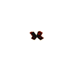
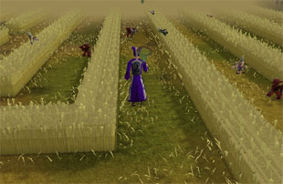
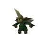

")
Hunter - Butterfly and Impling Netting (Level 15+)
Butterfly Netting | Butterfly Locations | The Butterflies | Butterfly Rewards | Barehanded Butterfly Catching
Impling Netting | Impling Locations | The Implings | Impling Rewards | Barehanded Impling Catching
Impling Netting | Impling Locations | The Implings | Impling Rewards | Barehanded Impling Catching
Butterfly Netting

The butterfly net and jar can be bought at the Hunter stores of Yanille and Nardah. Once in possession of these, and at least level 15 in Hunter, you can begin to catch butterflies. Those with lower Hunter skills will be looking to start with the ruby harvest, a beautiful crimson butterfly that can be found north of the Gnome Stronghold, just before the Piscatoris Fishing Colony.
To catch a butterfly, first wield the butterfly net and have the jar in your inventory. Then, simply left-click on the red butterflies in the area to attempt to catch them. Your level of success will be limited by your Hunter level, but it should be no time at all before you catch your first.
If you wish to collect more than one butterfly then you will need more than one jar, as only one butterfly can be in a jar at any one time. The jar can be emptied and a butterfly released, if need be.
Butterfly Locations
For maps and detailed locations of the butterfly netting creatures for Hunter, visit the Hunter - Locations page.
Butterflies can be found at the following Hunter areas around RuneScape: the sapphire glacialis and snowy knight at the Rellekka and Trollweiss Hunter area, north of Rellekka; the ruby harvest at the Piscatoris Hunter area, just north of the Gnome Stronghold; and the black warlock in the Feldip Jungle, just south of the Feldip Hills and Gu'Tanoth.
The Butterflies
Creature |
Levels Required |
Experience Gained |
Hunter reward |
Notes |
Location |
![[image]](../../img/main/kbase/skills/hunter/npcs/rubyharvest.gif) Ruby harvest |
15 |
24 | Ruby harvest in a jar | Can be used on another player in multi-way combat (see below). | Piscatoris Hunter area |
![[image]](../../img/main/kbase/skills/hunter/npcs/sapphire_glacialis.gif) Sapphire glacialis |
25 |
34 | Sapphire glacialis in a jar | Can be used on another player in multi-way combat (see below). | Trollweiss Hunter area |
![[image]](../../img/main/kbase/skills/hunter/npcs/snowyknight.gif) Snowy knight |
35 |
44 | Snowy knight in a jar | Can be used on another player in multi-way combat (see below). | Trollweiss Hunter area |
|  Black warlock |
45 |
54 | Black warlock in a jar | Can be used on another player in multi-way combat (see below). | Feldip Hunter area |
Butterfly Rewards
Caught butterflies may seem to have no immediate use, but they really come into their own when used in multi-way combat areas. These fragile but magical creatures can be released on another player in these areas, and only these areas (they cannot be used on other players fighting within single-way combat areas, for example), giving positive effects to that target player.
The detailed effects of each butterfly can be found in the table below.
Butterfly |
Levels Required |
Uses |
![[image]](../../img/main/kbase/skills/hunter/items/rubyharvest.gif) Ruby Harvest |
15 |
Boosts another player's Attack. |
![[image]](../../img/main/kbase/skills/hunter/items/sapphireglacialis.gif) Sapphire Glacialis |
25 |
Boosts another player's Defence. |
![[image]](../../img/main/kbase/skills/hunter/items/snowyknight.gif) Snowy knight |
35 |
Restores another player's life points. |
![[image]](../../img/main/kbase/skills/hunter/items/blackwarlock.gif) Black warlock |
45 |
Boosts another player's Strength. |
A butterfly can also be released in any area if you wish to use the jar for another butterfly.
Barehanded Butterfly Catching
It is possible to catch a butterfly barehanded, but you will need higher levels to achieve this feat. You will receive no butterfly and you will not need a butterfly jar. The XP reward is much higher per butterfly, if you can manage it:
|
Butterfly |
Hunter level |
Agility level |
Hunter XP gained |
Agility XP gained |
| Ruby harvest |
80 |
75 |
300 | 50 |
| Sapphire glacialis |
85 |
80 |
400 | 70 |
| Snowy knight |
90 |
85 |
500 | 100 |
| Black warlock | 95 |
90 |
650 | 125 |
Impling Netting

To start netting implings, you should first speak to Elnock Inquisitor on Puro-Puro. See the Impetuous Impulses page for more information.
To begin catching implings, you will need a buttefly net and an impling jar. Elnock Inquisitor will happily sell you up to ten impling jars per day if you trade with him. He will also store impling jars (up to 127), a butterfly net and some imp repellent for you for any future trips to Puro-Puro.
Impling Locations
You can hunt implings almost anywhere above ground in RuneScape as they wander about freely. The best place to find them, though, is in Puro-Puro.

- There is a permanent crop circle in Zanaris. To gain access to this portal you must have reached a certain point in the Lost City quest.
- Crop circles open up randomly in wheat fields all across RuneScape. They can be identified by a strange swirling area with a 'Centre of crop circle' option when you hold your mouse over it. Crop circles will stay open for a short period of time before fading away and reappearing in another wheat field somewhere in RuneScape. Anyone who enters Puro-Puro via a crop circle other than the one in Zanaris will be granted with a farming affinity boost, which, for the next thirty minutes, will allow them to push through Puro-Puro's magical wheat faster.
Alternatively, you can wander about RuneScape, keeping a sharp eye out for any implings that might be floating about. These implings outside of Puro-Puro can be caught with a net/jars, but travelling to RuneScape tires out the poor little things, so you'll find you're also able to catch them barehanded, though perhaps not as quickly as if you had a net and jar.
The Implings
Note: The experience you receive from capturing implings varies according to whether you capture them in the maze on Puro-Puro or in the lands of RuneScape.
| Impling | Levels Required |
Hunter Experience Gained (Maze) |
Hunter Experience Gained (World) |
|
 Baby impling |
17 |
20 | 25 | |
 Young impling |
22 |
48 | 65 | |
 Gourmet impling |
28 |
82 | 113 | |
 Earth impling |
36 |
126 | 177 | |
 Essence impling |
42 |
160 | 225 | |
 Eclectic impling |
50 |
205 | 289 | |
 Spirit impling |
54 |
227 | 321 | |
|  Nature impling |
58 |
250 | 353 | |
 Magpie impling |
65 |
289 | 409 | |
 Ninja impling |
74 |
339 | 481 | |
 Pirate impling* |
76 |
350 | 497 | |
 Dragon impling |
83 |
390 | 553 | |
 Zombie impling |
87 |
412 | 585 | |
 Kingly impling |
91 |
434 | 617 |
* You can only catch pirate implings if you have completed Rocking Out.
Impling Rewards
You can trade captured implings for equipment from Elnock Inquisitor in Puro-Puro. To trade with Elnock, simply right-click on him and select 'Trade'. This will bring up a trade window
As you can see, Elnock will trade any captured impling for 3 jars, or the following combinations:
Imp repellent reduces the chances of imp defenders rescuing captured implings from your inventory.
Magic butterfly nets increase your chances of successfully netting implings and butterflies.
Jar generators will provide you with free butterfly and impling jars. To create a new jar, simply right-click on the generator and select the type of jar you wish to create. Each generator has a limited number of charges, though, and will disappear when it is exhausted. You will have to trade with Elnock to get another generator.
 In addition to the trade options for dealing with Elnock Inquisitor, you can loot the captured implings. Implings carry things that people desire, though some are better at it than others. Very young implings have yet to figure out what people like, and often have a taste for odds and ends rather than treasures and tools, so a baby impling may only carry a bowstring.
In addition to the trade options for dealing with Elnock Inquisitor, you can loot the captured implings. Implings carry things that people desire, though some are better at it than others. Very young implings have yet to figure out what people like, and often have a taste for odds and ends rather than treasures and tools, so a baby impling may only carry a bowstring.  Older implings tend to gain a taste for a certain type of object, though, so a gourmet impling is likely to carry food, a nature impling might carry seeds, and dragon implings are known to carry the components of dragon arrows. Kingly implings (in a series of bizarre thefts, which Elnock Inquisitor is currently investigating) have also been known to steal items of clothing from various monarchs. Perhaps you'll find some of this regal attire when looting them...
Older implings tend to gain a taste for a certain type of object, though, so a gourmet impling is likely to carry food, a nature impling might carry seeds, and dragon implings are known to carry the components of dragon arrows. Kingly implings (in a series of bizarre thefts, which Elnock Inquisitor is currently investigating) have also been known to steal items of clothing from various monarchs. Perhaps you'll find some of this regal attire when looting them...
Barehanded Impling Catching
Like with butterflies, implings can also be captured without a net or jars, but only those that are found in RuneScape. They're harder to track down (hence why they award more Hunter experience), but easier to capture when found (because the journey from Puro-Puro to RuneScape tires them out). They can still be quite agile, so you'll have greater success at capturing implings without a net if your Agility level is high. Also, you won't keep hold of any implings caught with your bare hands, but you will get to keep their loot.

More articles in
Hunter (Members Only)
|
|